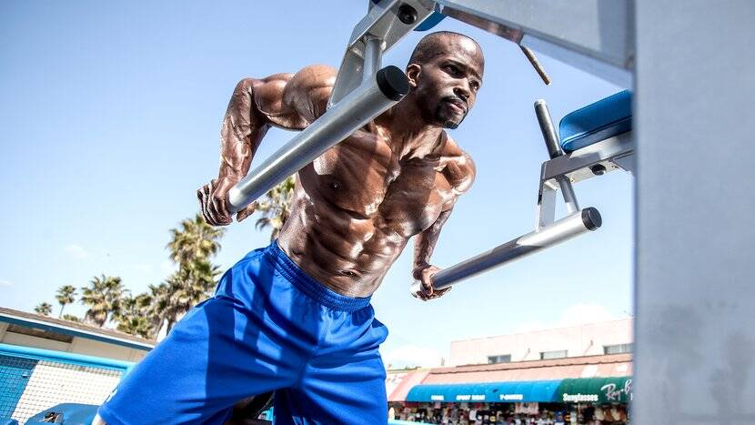

here are dozens of exercises you can do on chest day.
In fact, the Bodybuilding.com
Exercise Database lists at least 84,

but you probably don't want to spend a Monday afternoon—or several
Mondays—trying them all.
You just want to know the best exercises for building a muscular chest,
no questions asked.
We've done the work for you, and found the top 10.